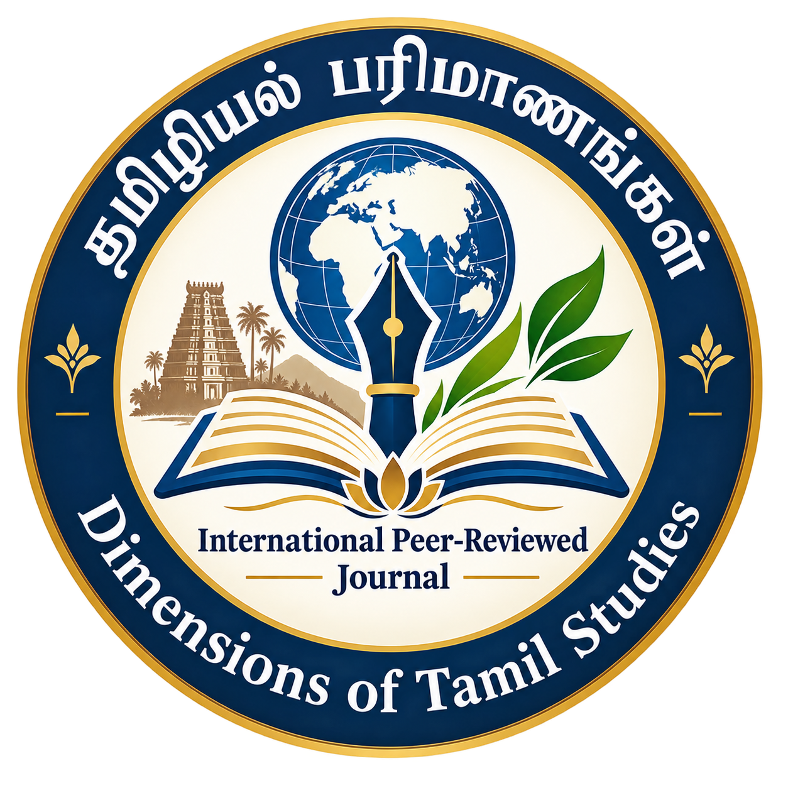

தமிழியல் பரிமாணங்கள் (Dimensions of Tamil Studies)
Volume 1 | Issue 1
September 2026
Pages 18–26
The concept of the five Tinais occupies an important place in Sangam literature and reflects the close relationship between human life and the natural environment. The five Tinais—Kurinji, Mullai, Marutham, Neithal, and Palai—are associated with distinct geographical landscapes, ways of life, emotions, occupations, and cultural practices. This study examines the traditional significance of the five Tinais in Sangam literature and explores how landscape, human experience, and social life are interconnected within the Tamil literary tradition. The study highlights the cultural and ecological dimensions of the Tinai system and its contribution to understanding ancient Tamil society.
Sangam Literature, Five Tinais, Kurinji, Mullai, Marutham, Neithal, Palai, Tamil Culture, Landscape, Tinai Tradition